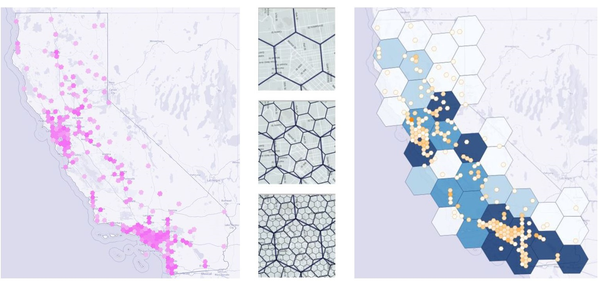
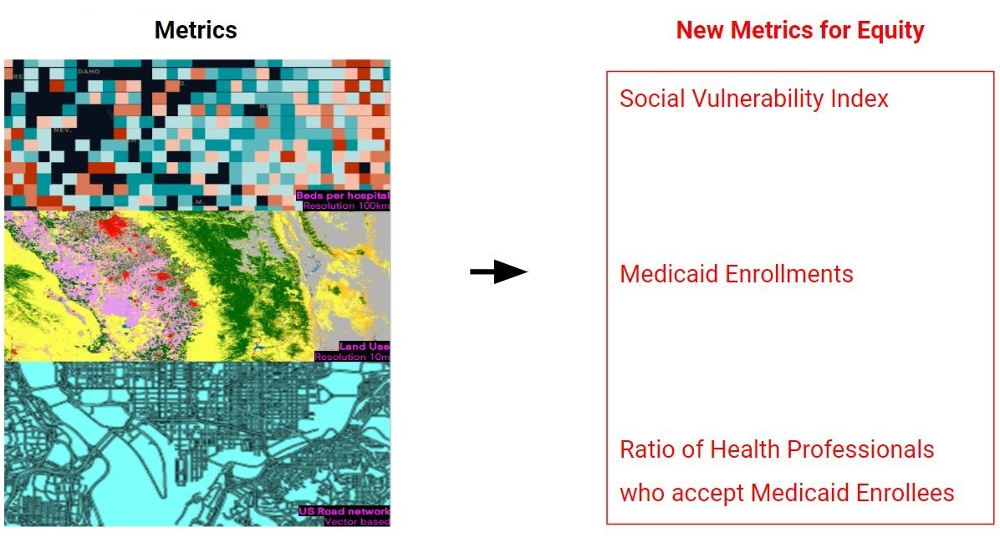

equitable identification of healthcare site & typology
Creative Technologies team at Bryden Wood suggested the ‘Healthcare Site & Typology Identification’ proposal for the GSAPP CDP program. As a healthcare provider is looking to expand hospital provision at county level, across a range of US states, the Creative Technologies team set up the objectives for the proposal and I used it as a starting point for my capstone project.
-
site identification methodology
The project will analyze, evaluate and combine quantitative with qualitative data sources and will represent human healthcare needs, and local built environment conditions for determining site suitability. -
repeatable down-selection process
The project will explain how the suitability of each potential site is explored, considering often competing criteria, and will reveal an attitude towards evidence-based decision making within the selection process. -
design proposition for future healthcare
The project will consider and propose the distribution of new healthcare facilities, providing an opportunity to critically reflect on and rethink the nature of healthcare infrastructure provision at county level.
